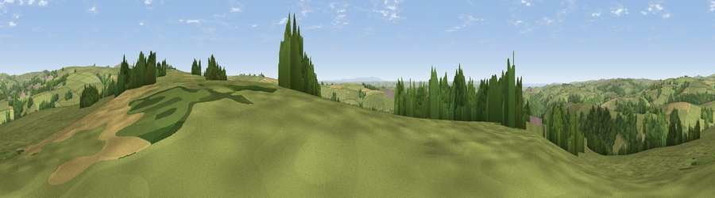

Viewpoint near Stoke Rivers
#13526 in England · top 28% of its area beats it · near Stoke RiversThe view, rendered

A 360° render of this exact spot computed from the terrain model, tree cover and land cover — summer colours, afternoon light, calibrated against photographs of famous viewpoints. Real trees, hedges and buildings will differ in detail.
The panorama
Grey silhouette: terrain skyline in each direction (720 bearings, Earth curvature and refraction included). Dashed green: skyline with trees (+15 m) and buildings (+8 m) as obstacles. Blue strip: how far the ground is visible on each bearing.
Where the view opens
Wedge length = distance to the farthest visible ground on that bearing (vegetation-aware). Rings at 10, 25 and 50 km.
What fills the view
73% grassland · 19% woodland · 6% cropland ·
Angular shares of the visible panorama (visual magnitude), not map area. Landscape diversity 0.35 (0–1 Shannon).
Key numbers
More beautiful places nearby
The staircase of upgrades: each row has a higher view potential than everything closer. Driving times are estimates from straight-line distance, calibrated against real road routing — check an actual route before setting out.
| Place | Direction | Drive | Score |
|---|---|---|---|
| Viewpoint near Stoke Rivers | SW · 2 km | ~6 min | 66.4 |
| Viewpoint near Bratton Fleming | NNE · 3 km | ~7 min | 69.8 |
| Yollacombe Hill | S · 7 km | ~14 min | 70.2 |
| Viewpoint near Landkey | SSW · 7 km | ~15 min | 74.0 |
| Viewpoint near Challacombe | ENE · 8 km | ~15 min | 75.8 |
| Codden Hill | SW · 8 km | ~16 min | 81.3 |
| Viewpoint near Martinhoe | N · 12 km | ~23 min | 86.5 |
| Holdstone Hill | N · 12 km | ~23 min | 90.2 |
51.10278, -3.94778 · source: screening · position refined by local search. Computed location — check access rights before visiting.